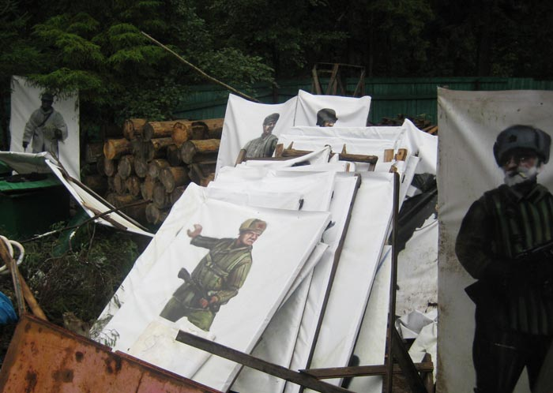
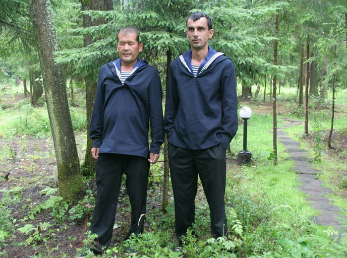
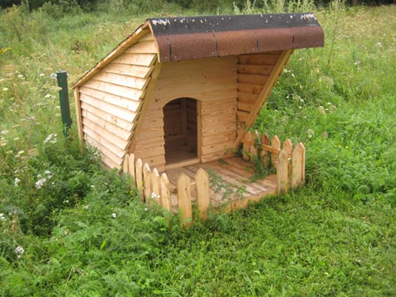
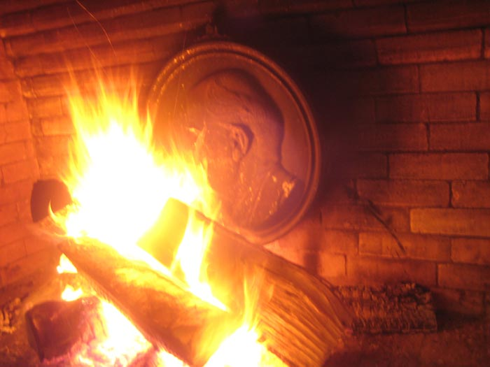

OFF PROGRAM
Получив приглашение от организаторов фестиваля актуального искусства в Веретьево приехать на открытие, мы (я, Рада и Вован) решили им воспользоваться. Дорога туда заняла около 3 часов по вине многочисленных дачников, умело блокировавших все выезды из города.
Километрах в десяти до места мне приспичило почитать книжек. Книжки были неплохими, чувства обострились, и в приподнятом состоянии я проник на арт-территорию.
 Первое, что я увидел, привело меня в восторг. Это была композиция, состоящая из трехметровой скульптуры мальчика-футболиста, снимающего трусы при виде пятиметровой раздевающейся девочки-пловчихи! Все это сработано утонченно-гротескно-грубовато, словно мастера, выполняющие заказы Кунса, делали русскую версию и слегка халтурили.
Первое, что я увидел, привело меня в восторг. Это была композиция, состоящая из трехметровой скульптуры мальчика-футболиста, снимающего трусы при виде пятиметровой раздевающейся девочки-пловчихи! Все это сработано утонченно-гротескно-грубовато, словно мастера, выполняющие заказы Кунса, делали русскую версию и слегка халтурили. "Эге, - подумал я, - здесь будет что посмотреть!"
По мере углубления в лес действие ганжи благоприятно усиливалось. Краем глаза я заметил куратора О.С.Дряблову, обнимающую художника Д.Утова + еще кого-то... вот мелькнул белый блин лица вездесущего... Чур - Чур! Меня ведь в первую очередь интересуют работы художников!...Я ведь за этим приехал!
Следующая обнаруженная мной инсталляция поразила масштабностью и выразительностью приема. "Как это свежо выглядит, - подумалось мне, - сделать большое количество картин и свалить их в кучу на помойке, тем самым как бы намекая на истинное место искусства в наши дни"...."нет противоречия этому и в изображениях на картинах, поскольку и униформа, и наци, и подпольщики - это так актуально сейчас".
Отдав дань этой без сомнения талантливой работе, я поспешил пересечь оживленный участок экспозиции, где все время раздавались "здоров-привет", и направился к реке.
То, что я там увидел, превзошло все ожидания! На берегу, на фоне среднерусской природы, в непосредственных позах сидели и стояли моряки с лицами жителей Средней Азии! Их позы, легкое смущение и в то же время искренняя радость при виде такого количества новых, странных людей вокруг, поражали дикой гармонией нового времени и… и в то же самое время отсылали нас ... туды, и в миры Пьера&Жиля, Тома Финланда, и еще дальше. "Боже мой! Умеют же люди", - с легкой завистью подумал я.
После увиденного я испугался, что еще большего восторга не смогу перенести, и поэтому пошел прочь из мира искусства к чайному теремку, стоящему поодаль. По дороге туда я отметил еще один достойный объект, по-видимому, относящийся к школе Кабакова.
Под навесом уже находилось некоторое количество гостей и участников фестиваля. И странное дело - как только я и мои спутники вошли в теремок, словно по команде начался мелкий дождь, быстро перешедший в ливень со штормовым ветром. Порывы ветра с дождем были настолько сильными, что заливали всех находящихся под навесом. Часть людей, одетых слишком легко для такой непогоды, быстро промокли и стали замерзать, что заставило других, одетых в плащи и куртки, прикрывать их своими телами. Без сомнения, это был еще один, управляющий силами природы, талантливый перформанс, направленный на критику индивидуализма и эгоцентризма.
Такое количество искусства уже становилось трудновоспринимаемым, и мы поспешили в другой терем, со стенами и большим камином, где и решили провести остаток вечера.
Попытка обслуги отогнать нас от огня и дать место художнику Жабурову поговорить в камеру была воспринята как неудачная акция и отвергнута. Уже там, в тепле, грея ноги у огня, я обнаружил еще одну замечательную работу, корнями уходящую в немецкий экспрессионизм и наш соц-арт. "Барельеф Ленина в огне - это блестящая метафора утраты идеалов в обществе потребления и наживы! " - подумалось мне.
Конец дня прошел более сумбурно..."здоров-привет" раздавались повсюду, а я все думал - "Как они там?... в лесу и на реке...наверное, по-прежнему приветливо улыбаются редким прохожим, а ветер шевелит ленточки их бескозырок".
...позже, дома, делясь впечатлениями с Радой и показывая ей свои фотографии арт-объектов, я с удивлением узнал, что все они остались от прошлых времен и вовсе не являются работами с фестиваля актуального искусства Арт-Веретьево. Джа попутал!
дбулныгин. 2008. мсква